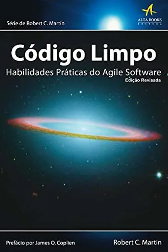
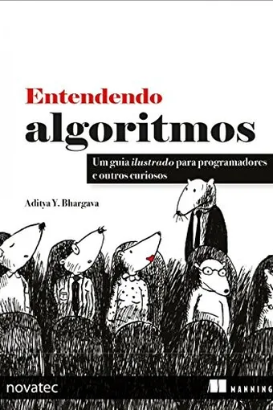
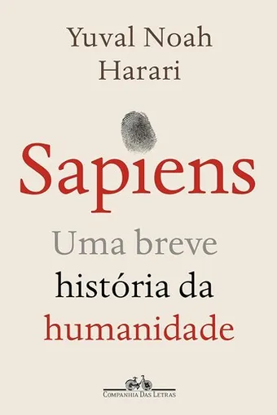

Tecnologia
Código Limpo

Robert C. Martin · Análise e Desenvolvimento de Sistemas
Boas práticas para escrever código legível, fácil de manter e de testar.
Ler sinopse
Com exemplos práticos, o autor mostra como dar bons nomes, escrever funções pequenas, tratar erros e refatorar código existente. Leitura essencial para quem está começando em desenvolvimento de software.
Saiba mais sobre Código Limpo (abre em nova aba)
Tecnologia
Entendendo Algoritmos

Aditya Y. Bhargava · Análise e Desenvolvimento de Sistemas
Um guia ilustrado para entender algoritmos sem complicação.
Ler sinopse
Com desenhos e exemplos do dia a dia, o livro explica busca binária, recursão, ordenação, grafos e programação dinâmica. Ideal para quem quer uma base sólida em lógica e estruturas de dados.
Saiba mais sobre Entendendo Algoritmos (abre em nova aba)
Gestão
Introdução à Teoria Geral da Administração
Idalberto Chiavenato · Administração
Uma visão abrangente das teorias que formaram a administração moderna.
Ler sinopse
Da Administração Científica às abordagens contemporâneas, Chiavenato apresenta as principais escolas do pensamento administrativo e como elas se aplicam às organizações de hoje.
Saiba mais sobre Introdução à Teoria Geral da Administração (abre em nova aba)
Gestão
O Poder do Hábito
Charles Duhigg · Gestão de Pessoas
Por que fazemos o que fazemos na vida e nos negócios.
Ler sinopse
Duhigg explica o ciclo deixa, rotina e recompensa e mostra como empresas, equipes e pessoas mudam hábitos para melhorar resultados. Útil para os estudos, a carreira e a liderança.
Saiba mais sobre O Poder do Hábito (abre em nova aba)
Finanças
Pai Rico, Pai Pobre
Robert T. Kiyosaki · Ciências Contábeis
Lições sobre dinheiro e educação financeira que a escola não ensina.
Ler sinopse
A partir da história de seus dois “pais”, Kiyosaki discute ativos, passivos, investimentos e a importância da educação financeira para tomar decisões melhores com o próprio dinheiro.
Saiba mais sobre Pai Rico, Pai Pobre (abre em nova aba)
Conhecimento geral
Sapiens

Yuval Noah Harari · Leitura para todos os cursos
Uma breve história da humanidade, da Idade da Pedra ao século XXI.
Ler sinopse
Harari percorre as revoluções cognitiva, agrícola e científica para explicar como o Homo sapiens passou a dominar o planeta e quais desafios isso traz para o futuro.
Saiba mais sobre Sapiens (abre em nova aba)